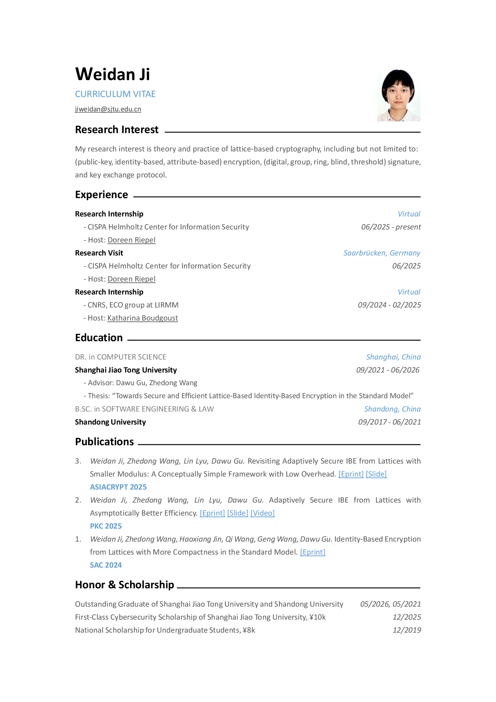

About
I am a Ph.D. candidate in Computer Science at Shanghai Jiao Tong University, advised by Prof. Dawu Gu and Prof. Zhedong Wang. Before that, I received my B.Sc. in Software Engineering and Law from Shandong University.
My research focuses on lattice-based cryptography, especially secure and efficient identity-based encryption in the standard model. My broader interests include public-key encryption, attribute-based encryption, digital signatures, group and ring signatures, blind and threshold signatures, and post-quantum key exchange protocols.
I have been a research intern at CISPA Helmholtz Center for Information Security, hosted by Doreen Riepel, and at the ECO group of LIRMM/CNRS, hosted by Katharina Boudgoust.
Publications
Curriculum Vitae
The PDF version of my CV is available below.
